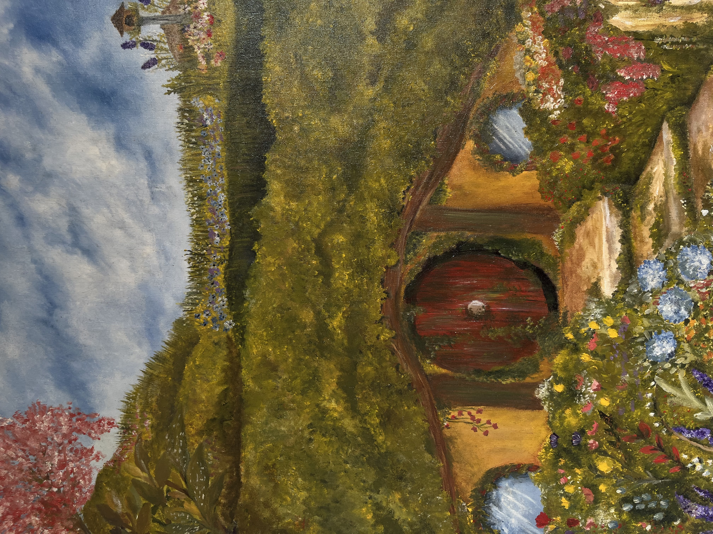
01
Quadros & Pinturas
Cores, formas e paisagens que transformam uma tela em uma pequena janela para outro lugar.
✦ Mundo de Blue ✦
Um pequeno mundo onde arte, natureza e imaginação se encontram para transformar ideias em peças feitas à mão.
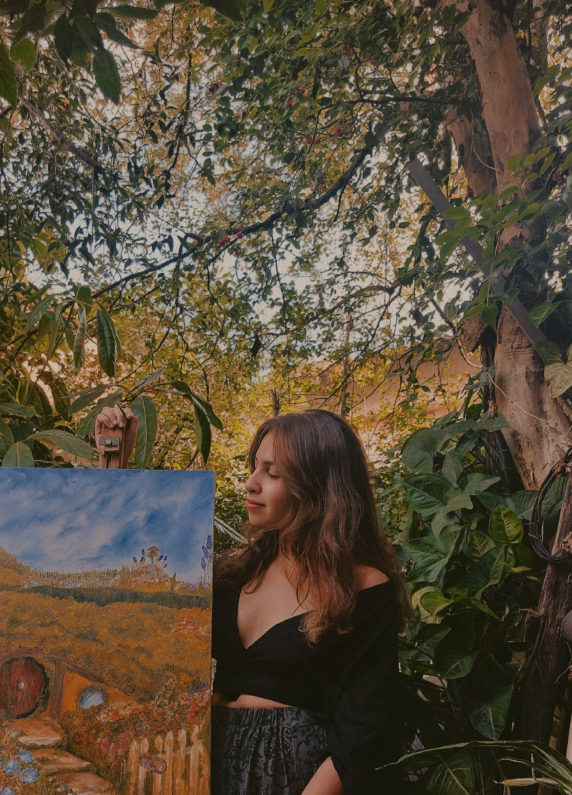
Sou Evellyn, uma artesã autodidata apaixonada por arte, natureza e tudo aquilo que desperta a imaginação.
No Mundo de Blue, transformo inspiração em peças feitas à mão. Pinto quadros, crio peças em cerâmica fria e experimento diferentes formas de expressão artística.
Gosto de observar os pequenos detalhes da natureza — folhas, flores, animais, luas, texturas e cores — e levar um pouco dessa magia para aquilo que crio.
Cada peça nasce de um processo artesanal e carrega um pedacinho da minha maneira de enxergar o mundo.
Criações feitas à mão
Arte não precisa caber em uma única forma. Aqui, cada técnica encontra espaço para contar uma história.

Cores, formas e paisagens que transformam uma tela em uma pequena janela para outro lugar.
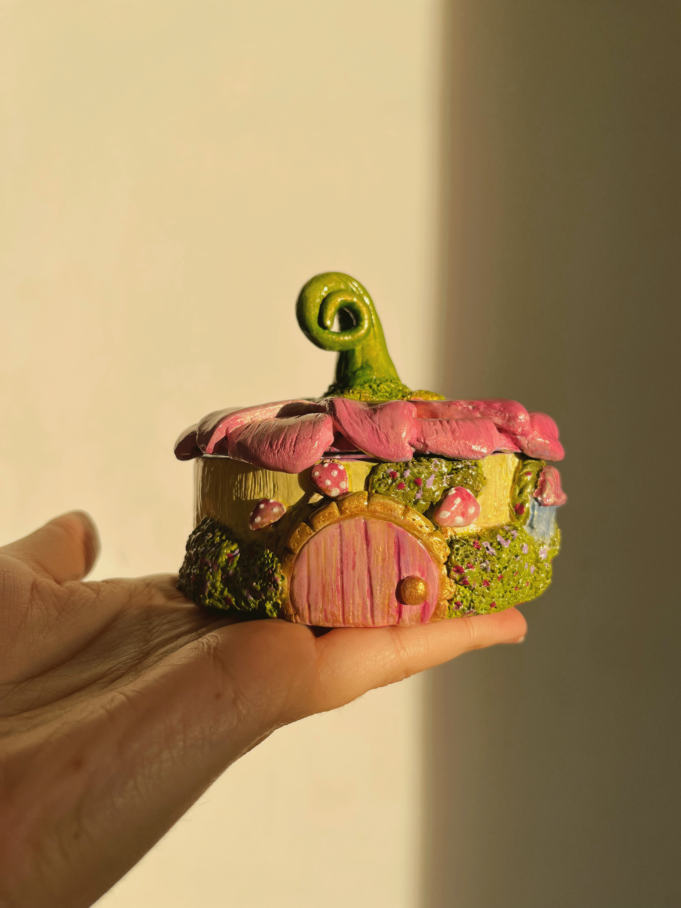
Pequenas criações moldadas à mão, com detalhes delicados e inspiração no mundo natural.
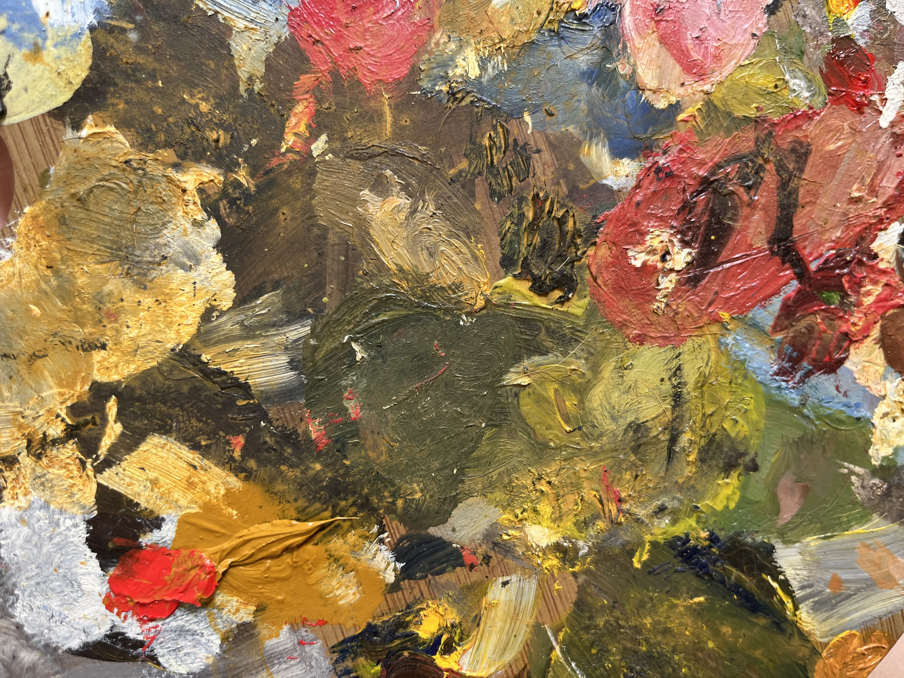
Experimentos, projetos e novas formas de criar. Porque a criatividade gosta mesmo é de explorar.
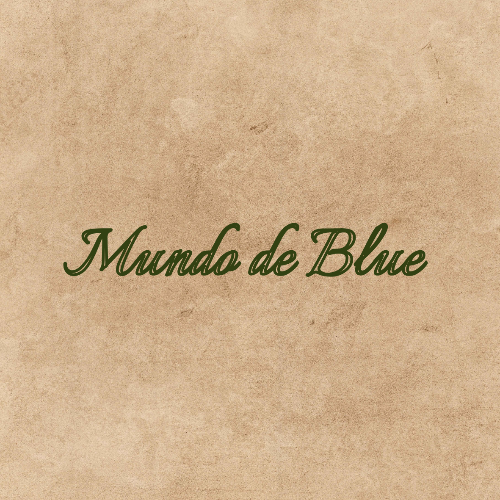
Arte & natureza
O Mundo de Blue nasceu do desejo de criar sem pressa, observar a natureza e transformar sentimentos em coisas que possam ser tocadas, vistas e guardadas.
Minha inspiração vem de lugares simples: uma caminhada entre árvores, o formato de uma folha, uma noite estrelada, uma criatura imaginária ou uma história que ficou na memória.
Galeria
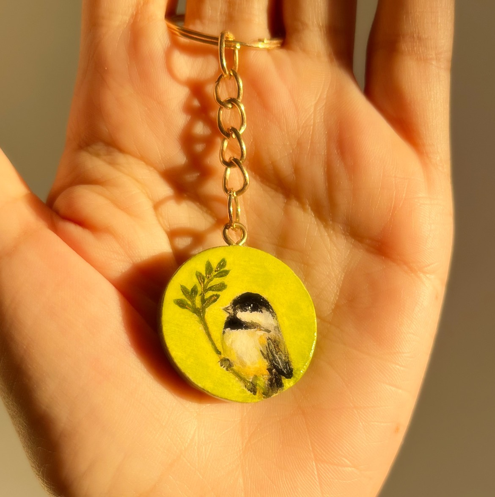
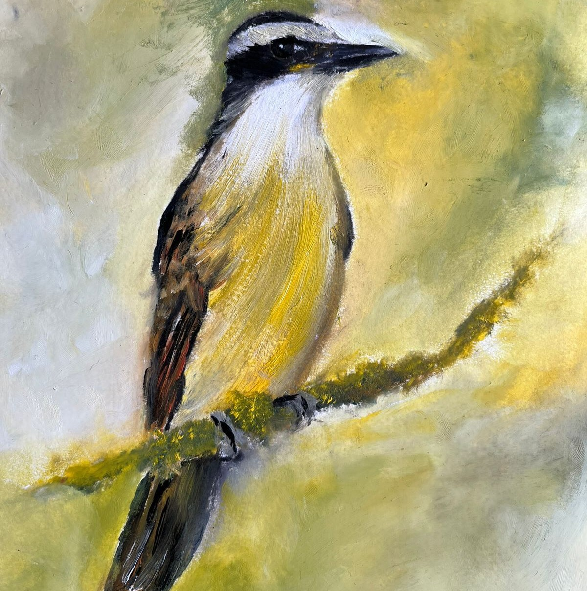
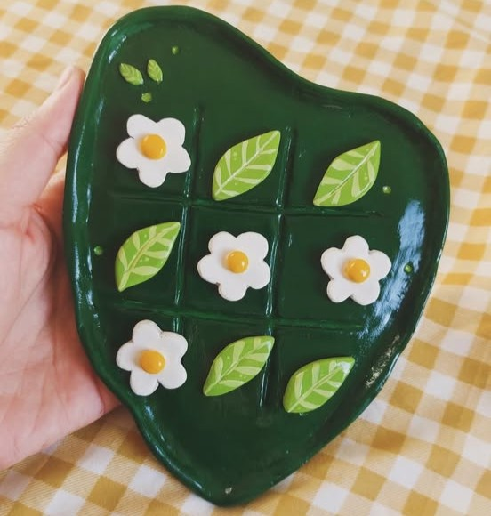
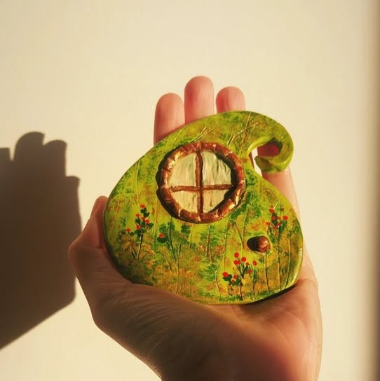
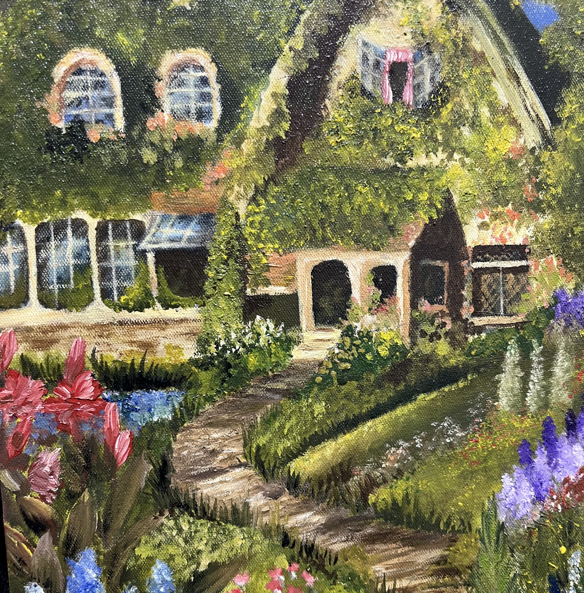
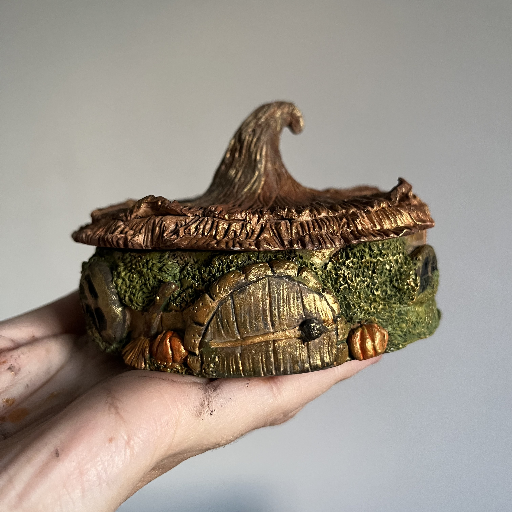
Vamos conversar?
Para conhecer mais trabalhos, acompanhar as novidades ou falar sobre uma peça, entre em contato comigo.